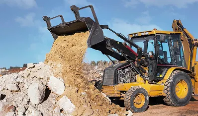

Demolition Services in New Orleans, LA
Big Easy Land Clearing tears down sheds, small structures, plus old slabs, then hauls the debris off the property. Structure demolition can require parish paperwork; we are not attorneys and do not pull permits, so confirm with your parish before work starts. Free, fast, and accurate estimates across New Orleans, Metairie, Baton Rouge, and the Northshore: 504-517-0012.
A shed that's rotted through. A pump house nobody uses. A slab left over from something that came down years ago. It's taking up space and it isn't going anywhere on its own. We bring the equipment, break it down, and leave the site clear.
What comes down
What Does Demolition Cover?
Sheds & outbuildings
Storage sheds, pump houses, and small structures that have outlived their use.
Old slabs & pads
Concrete left over from a structure that's already gone, broken up and hauled out.
Storm-damaged buildings
A structure that took damage and isn't worth saving, cleared so the lot is usable again.
Debris off the property
Everything that comes down gets hauled away, not left in a pile on your land.
The process
How Does a Demolition Job Run?
We start with a walk of the structure. Size, material, plus what's around it all shape how the job gets done, and whether it's a hand-and-hydraulic-hammer job or a machine job. Utilities get located and disconnected before anything comes down. Last, the structure gets broken apart, loaded, then hauled off the property.
Old slabs get the same treatment. Concrete is broken up, the pieces are loaded out, and if you need the ground ready for a shed, a patio, or a rebuild, we can follow with grading and site leveling in the same visit.

Do I Need a Permit to Demolish a Structure?
Structure demolition can require parish paperwork depending on what's coming down and where the property sits. We are not attorneys and we do not pull permits on your behalf. Before any work starts, confirm what your parish requires. Once that's sorted, we handle the physical work: breaking the structure down, clearing the site, and hauling debris off. Most demolition jobs on our schedule pair with other services on the same property, whether that's brush clearing around the structure or grading and site leveling once the slab is out, and one estimate covers the full scope.
If the debris pile is the bigger concern than the structure itself, our debris hauling page covers what we take and how that works on its own.
Straight answers
Demolition Services FAQs
What kind of demolition does Big Easy Land Clearing handle? +
Do I need a permit to tear down a shed or structure? +
Will you haul away the debris after demolition? +
Can you remove an old concrete slab? +
Where do you offer demolition services? +
Call 504-517-0012 for a Free Estimate
One crew, the right equipment, and a real number up front.
Free, fast, and accurate
Get Your Free Estimate
Call us or send the form. Licensed and insured, backed by a 100% satisfaction guarantee.
504-517-0012- ✓ Free, fast, and accurate estimates
- ✓ Licensed and insured
- ✓ 100% satisfaction guarantee